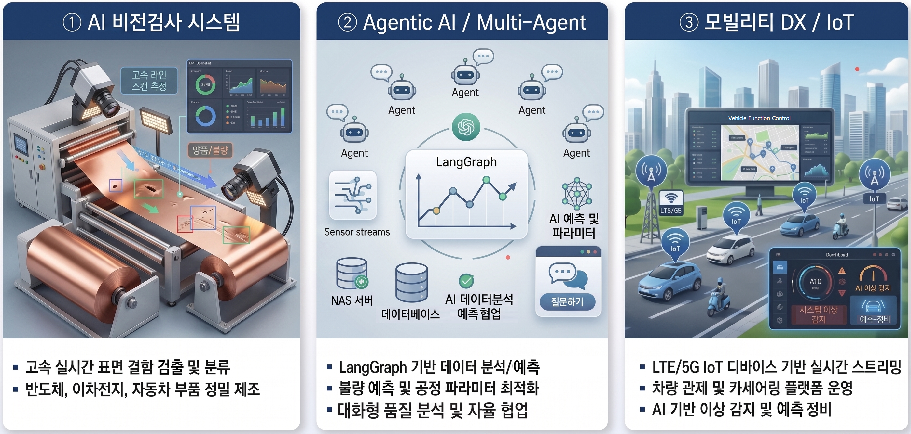
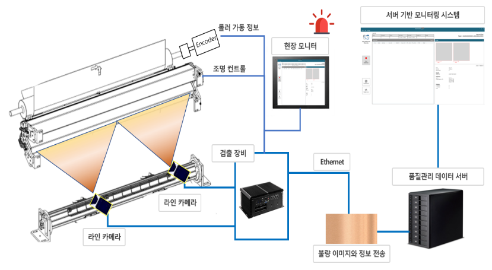
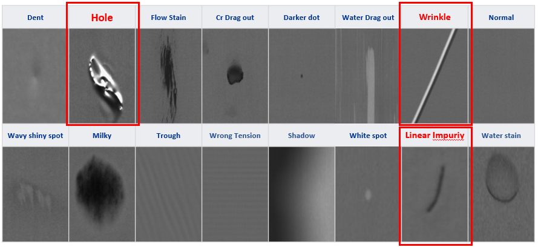
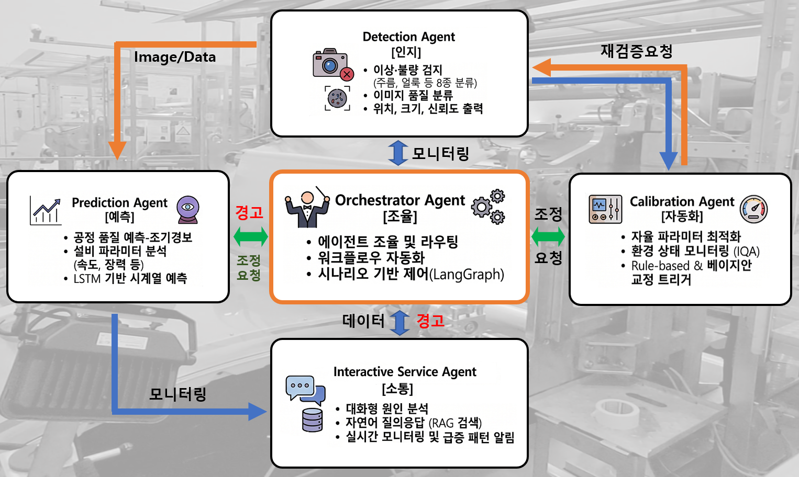
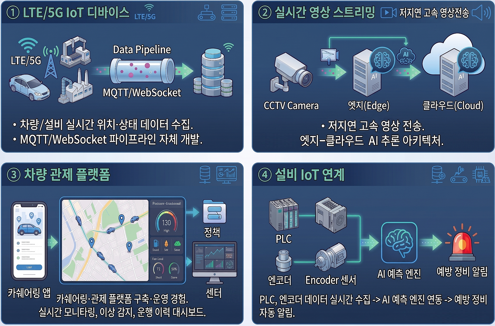
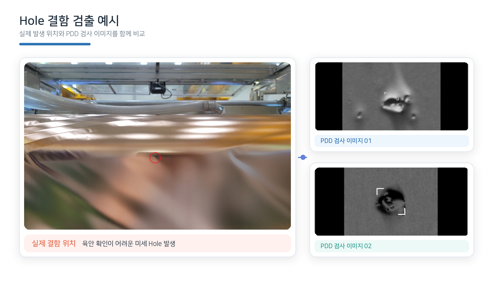
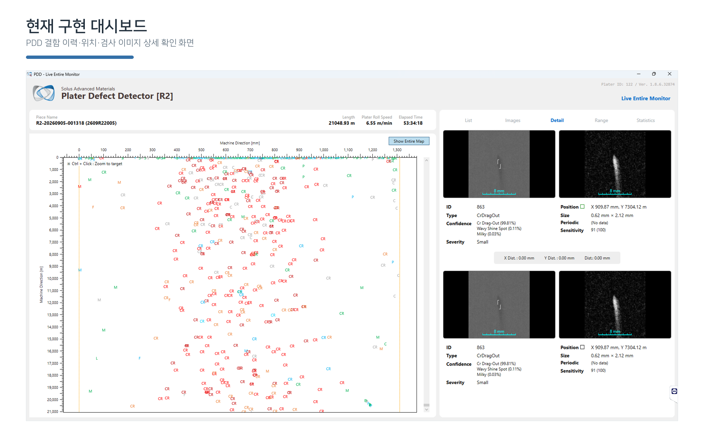

AI Vision Inspection
Real-time detection, classification, and traceability of surface defects with high-speed line-scan imaging. End-to-end delivery, from optics to AI to PLC.
VIEW MORE →AI VISION · AGENTIC AI · MOBILITY DX
We detect and classify surface defects on high-speed production lines in real time, and connect multi-agent AI with IoT to make your processes faster and smarter.
BUSINESS
We engineer AI vision inspection, agentic AI, and IoT/streaming technology into a single system that works in production.
Real-time detection, classification, and traceability of surface defects with high-speed line-scan imaging. End-to-end delivery, from optics to AI to PLC.
VIEW MORE →LangGraph-based agents autonomously collaborate on detection, calibration, prediction, and analysis to support decision-making in manufacturing.
VIEW MORE →We connect LTE/5G IoT, real-time video streaming, fleet monitoring, and equipment data to build predictable operations.
VIEW MORE →ABOUT CHINS AI LABS
CHINS AI Labs is an AI agent company specializing in manufacturing. From vision-based surface defect detection to multi-agent process intelligence and IoT/streaming, we design every system ourselves and deploy it in the field.

VISION AI
Optics tuned for copper foil, AI models, edge GPUs, and PLC integration — delivered as one system.

DEFECT CLASSIFICATION
Major defect types are classified automatically, including wrinkles, holes/pinholes, foreign matter, scratches, dents/impressions, oxidation/discoloration, stains, and Cr drag-out.

AGENTIC AI
Each agent owns a role, while the Orchestrator coordinates the entire workflow.

Receives inspection results · identifies defect types autonomously
Auto-optimizes lighting and camera parameters, with rollback
Forecasts defect surges in advance from time-series data
LLM + RAG natural-language root-cause analysis and SOP search
Coordinates all agents on a LangGraph state machine
On-premise LLMs (Llama) ensure security and data sovereignty while cutting cloud dependency costs.
MOBILITY DX / IoT
A scalable data pipeline spanning LTE/5G devices, edge-cloud AI, monitoring dashboards, and predictive maintenance alerts.

Collects vehicle and equipment location and status data in real time over MQTT/WebSocket.
Low-latency, high-speed video transmission with a hybrid edge–cloud AI inference architecture.
Proven experience with monitoring and car-sharing platforms: real-time tracking, anomaly detection, and trip history.
Connects PLC and encoder data to an AI prediction engine for predictive maintenance alerts.
REFERENCE
Our core technologies have been validated in mass production and real-world operations.
Remote and on-site maintenance of a line-scan defect detection system for a copper foil manufacturing process.
Design, development, installation, and handover of a real-time surface defect detection system, delivered on-site at an overseas plant in Hungary.
AI transformation of the DMS and business automation pipelines for an automotive dealer group.
In-house development and operation of LTE/5G IoT devices, real-time streaming, and monitoring/car-sharing platforms.


CONTACT
Let's discuss your inspection automation, process intelligence, or IoT/mobility DX project.